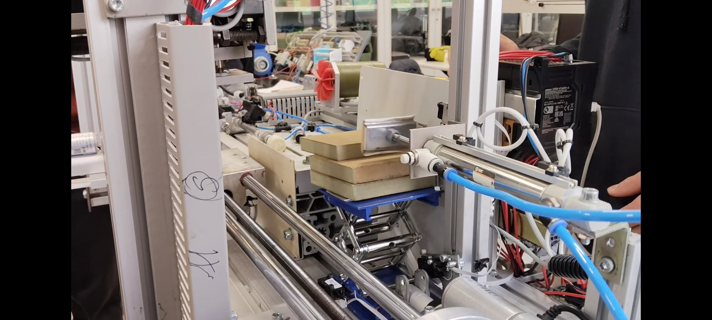
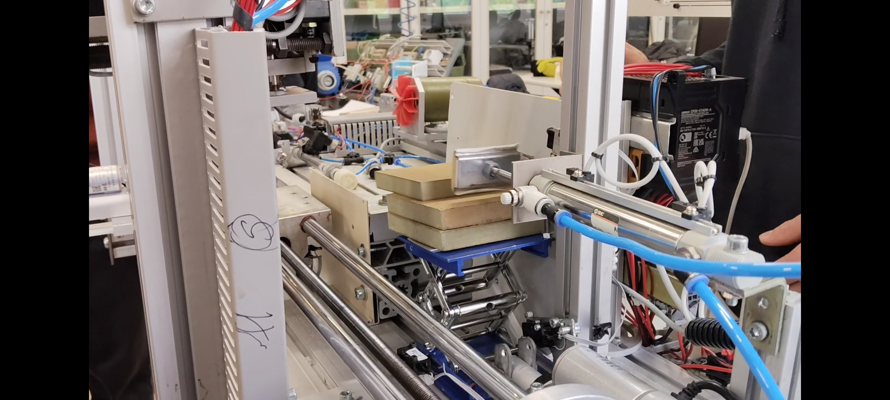
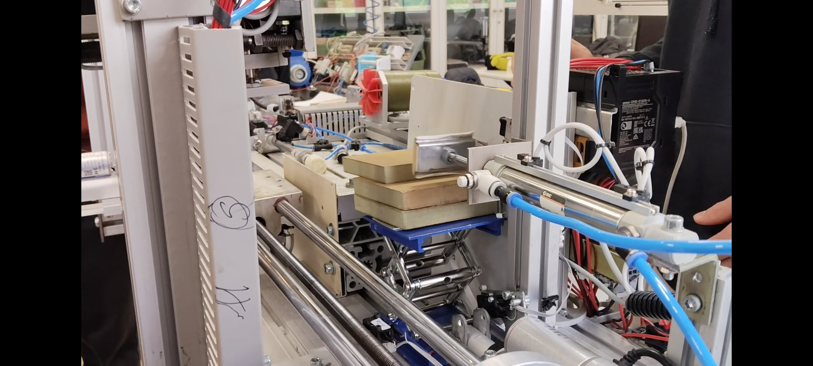

Emaitzak eta Datuak
Proiektuan lortutako emaitzak eta datuak, piezen manipulazio eta posizionamendu prozesuaren optimizazioarekin lotutakoak.
Itzuli Hasierara
 

Automatizatutako piezen manipulazioa eta posizionamendua
Proiektuan lortutako emaitzak eta datuak, piezen manipulazio eta posizionamendu prozesuaren optimizazioarekin lotutakoak.
Itzuli Hasierara
